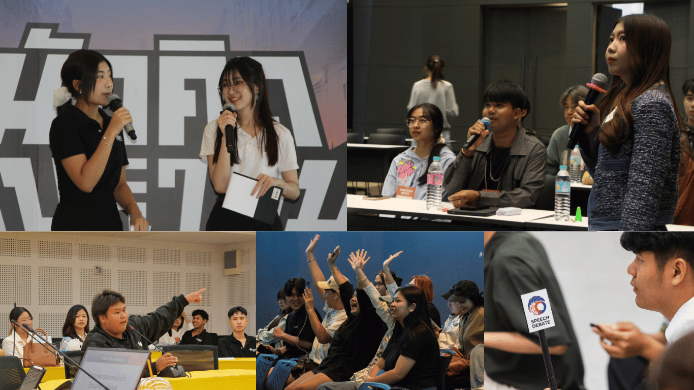
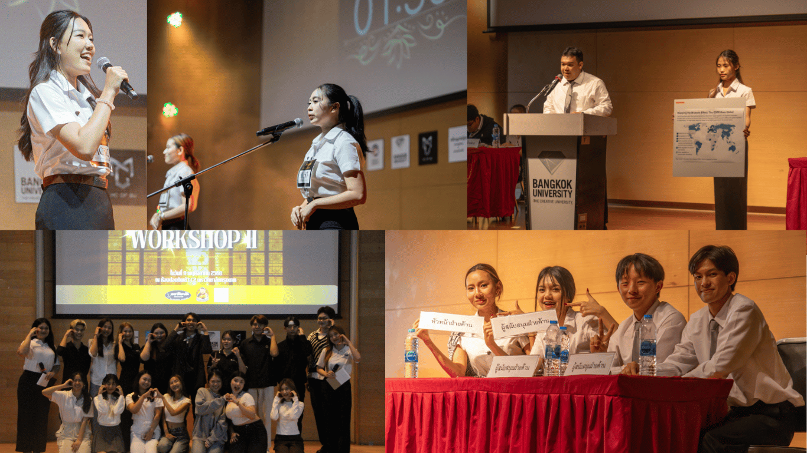
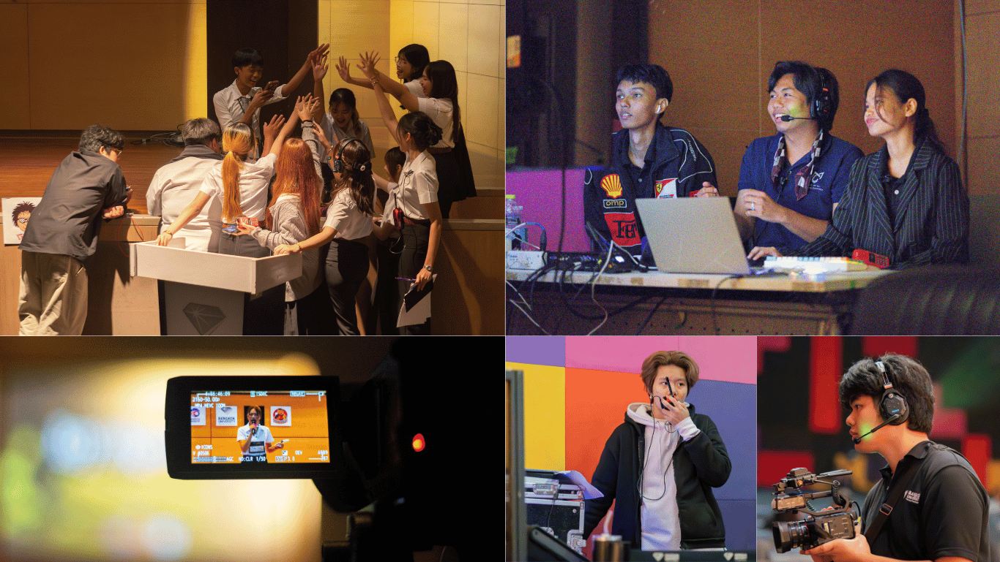

ในโลกที่ทุกอย่างขับเคลื่อนด้วย “ความคิด” และ “การสื่อสาร” คนที่ถ่ายทอดความคิดได้ชัดเจน ย่อมสร้างความเปลี่ยนแปลงได้มากกว่า
ชมรมปาฐกถาและโต้วาที มหาวิทยาลัยกรุงเทพ คือพื้นที่สำหรับนักศึกษาที่อยากพัฒนาตัวเองให้กล้าคิด กล้าพูด และกล้ายืนหยัดในมุมมองของตนเองอย่างมีเหตุผล
ที่นี่ไม่ใช่แค่ชมรมสำหรับคนพูดเก่ง แต่คือพื้นที่สำหรับคนที่อยาก “พัฒนา” ให้เก่งขึ้น
ชมรมปาฐภถาเเละโต้วาที หรือในอีกชื่อ "PATOK" (ปาฐก) เป็นพื้นที่สำหรับนักศึกษาที่สนใจพัฒนาทักษะด้านการสื่อสาร การแสดงออก และการคิดวิเคราะห์ โดยเปิดโอกาสให้สมาชิกได้เรียนรู้และฝึกฝนผ่านกิจกรรมที่หลากหลาย ไม่ว่าจะเป็นการพูดต่อหน้าสาธารณะ การนำเสนอความคิดเห็น หรือการทำงานร่วมกับผู้อื่นในบรรยากาศที่เป็นกันเองและสร้างสรรค์
แนวคิดของชมรมสอดคล้องกับอัตลักษณ์ของมหาวิทยาลัยกรุงเทพที่ส่งเสริมความคิดสร้างสรรค์ ความกล้าแสดงออก และการเรียนรู้จากประสบการณ์จริง เพื่อให้นักศึกษาได้พัฒนาศักยภาพของตนเองอย่างรอบด้าน

กิจกรรมหลักของชมรมประกอบด้วยการฝึกโต้วาที ซึ่งช่วยพัฒนาทักษะการคิดอย่างมีเหตุผล การวิเคราะห์ประเด็นจากหลากหลายมุมมอง และการสื่อสารความคิดเห็นอย่างสร้างสรรค์ นอกจากนี้ยังมีกิจกรรมการฝึกเป็นพิธีกรหรือผู้ดำเนินรายการ ที่เปิดโอกาสให้นักศึกษาได้ฝึกการพูดต่อหน้าผู้คน การจัดลำดับเนื้อหา และการสร้างบรรยากาศของกิจกรรมต่าง ๆ รวมถึงการฝึกพูดและการนำเสนอในรูปแบบที่หลากหลาย เพื่อเสริมสร้างความมั่นใจ บุคลิกภาพ และทักษะการสื่อสารที่ชัดเจนและน่าสนใจ
ชมรมจึงเป็นมากกว่าพื้นที่สำหรับทำกิจกรรม แต่เป็นพื้นที่ให้สมาชิกได้ทดลองบทบาทใหม่ ๆ เรียนรู้การทำงานเป็นทีม แลกเปลี่ยนความคิด และพัฒนาศักยภาพของตนเอง ผ่านประสบการณ์จริงที่ช่วยเตรียมความพร้อมสำหรับการเรียน การทำงาน และการใช้ชีวิตในอนาคต

นอกจากบทบาทบนเวทีแล้ว ชมรมยังเปิดโอกาสให้สมาชิกได้เรียนรู้การทำงานเบื้องหลังในหลายด้าน ไม่ว่าจะเป็นการวางแผนกิจกรรม การจัดการงาน การประสานงาน หรือการทำหน้าที่เป็นทีมงานและสตาฟในฝ่ายต่าง ๆ ของชมรม ประสบการณ์เหล่านี้ช่วยให้สมาชิกได้ฝึกทักษะการทำงานจริง ทั้งด้านการจัดการ การทำงานเป็นทีม และความรับผิดชอบ ซึ่งเป็นทักษะสำคัญที่สามารถนำไปต่อยอดได้ทั้งในการเรียนและการทำงานในอนาคต
